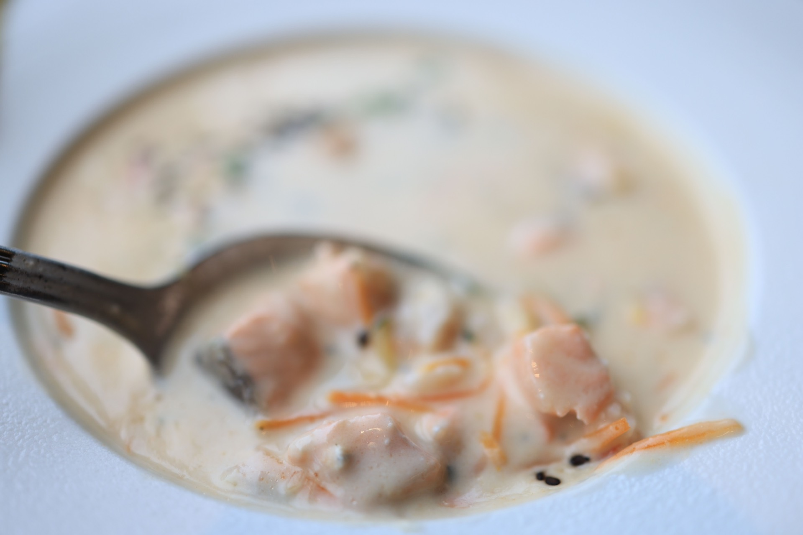
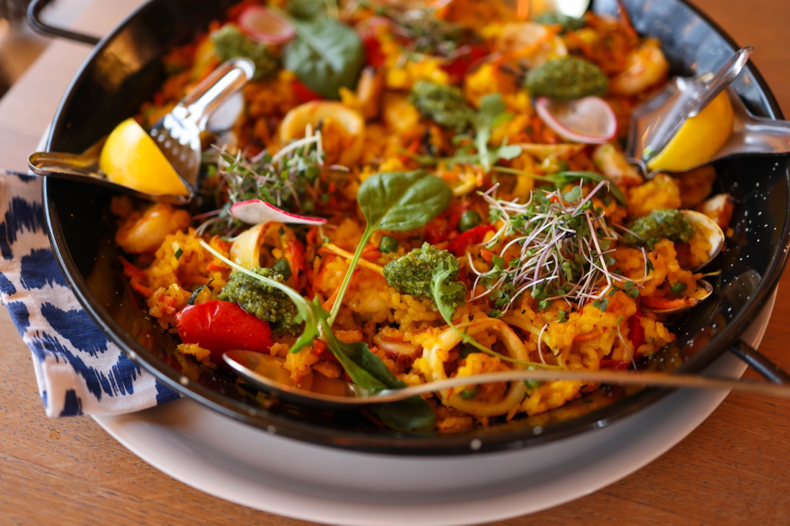
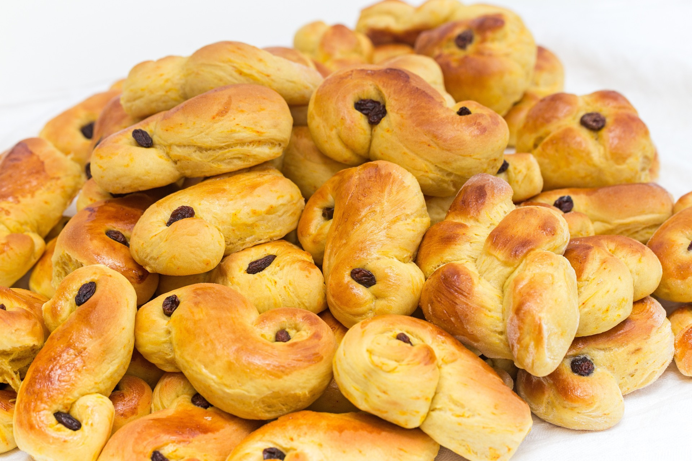

En velkomponert rett er ikke tilfeldig – den er balansert, gjennomtenkt og tilpasset deg. Her er oppskrifter i tre nivåer: enkle nok for en tirsdag, forseggjorte nok for gjester. Juster porsjoner, bytt ingredienser og filtrer bort allergener – mengdene følger med automatisk.

Kremet norsk favoritt med en mild søt-sur balanse.

Den spanske klassikeren med kylling, scampi og safran.
Saftig rørekake – fra enkel til mørk sjokolade med kaffe.
Tynne norske pannekaker – helt til safranpannekaker.
Persisk bastani med safran, kardemomme og pistasj.

Myke, gylne safranboller til Lucia og julebaksten.
Risotto alla Milanese – kremet ris der safran er poenget.
Fransk fiskegryte med safran, servert med rouille.
Safranris og safrankylling – vakkert og gavegivende.